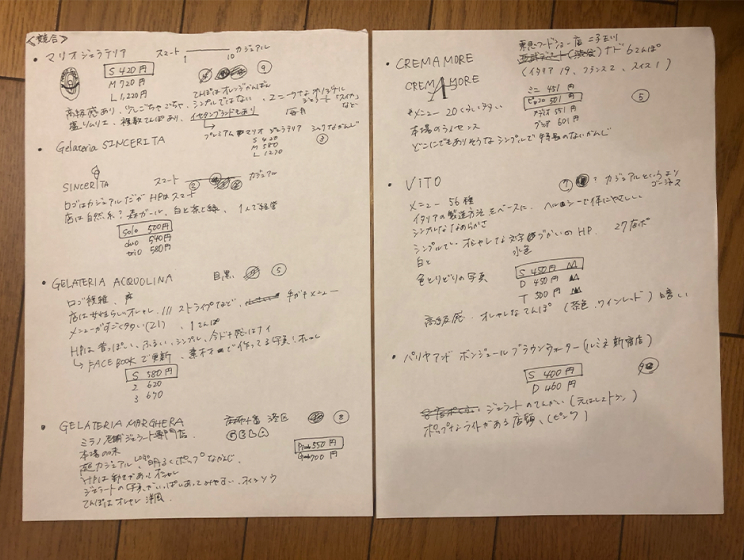
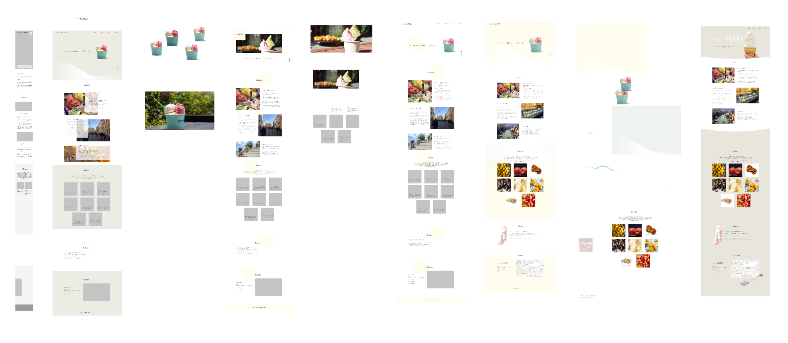

ジェラート専門店webサイト
TECH::EXPERTデザインコースの模擬課題にて、Webサイトを作成しました。素材集めからデザイン、コーディングまでを行いました。
新宿駅のNEWoManに新たにオープンするジェラート店「Gelateria MAKO」（仮想）のウェブサイト制作。（素材なし）
2019/10/22〜2019/10/31 （1週間半）
Photoshop / Illustrator / Figma / HTML / CSS / jQuery
Webサイト
28歳東京生まれの女性、年収600万、都内の1LDKでひとり暮らし。
社交的な性格で友人が多く、シンプルでセンスが良いものが好き。装飾より機能を好む。
趣味はカフェ巡りや、Instagramに写真の色味などこだわりのある写真を投稿すること。
新規事業出店における集客。
競合他社と比較したGelateria MAKOの特徴を明確にするために、各ジェラート店の情報の書き出しを行います。
競合調査と自社を比較し、GelateriaMAKOの特徴を明確化しました。
Gelateria MAKOは高級志向のジェラート店であることがわかり、またターゲットの好みから、シンプルでおしゃれな落ち着くデザインが好まれると予想しました。
自社の強みと、あらかじめ提示されていたジェラートの特徴を掛け合わせ、サイトコンセプトを決定しデザインを行いました。
シンプル
×
高級感
＝
サイトコンセプト
「20代半ば〜後半のカフェ巡りが好きな女性が好み、
なめらかな食感のジェラートが特徴の、
シンプルで高級感のあるおしゃれなサイト」
素材をフリー素材サイトから探し加工したのち、ワイヤーフレームからいくつかデザインに起こしていき、「なめらかな食感（曲線）」がイメージできるデザインを採用しました。
